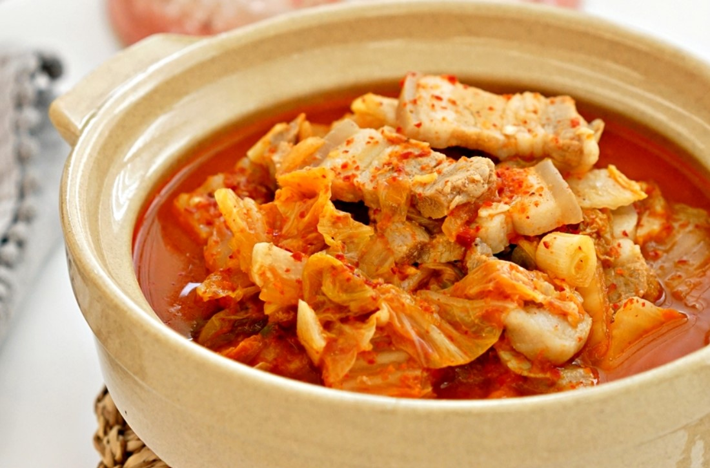

돼지고기 김치찌개
돼지고기 김치찌개만이 진리다!!
재료목록:
| 재료 | 용량 |
|---|---|
| 익은김치 | 1/2포기 |
| 두부 | 1모 |
| 대파 | 1단 |
| 간장 | 2스푼 |
| 마늘 | 1스푼 |
| 삼겹살 | 600g |
| 양파 | 1개 |
| 참기름 | 2바퀴 |
| 후추 | 약간 |
조리 순서:
- 냄비에 참기름을 두어 바퀴 돌려준 뒤 삼겹살을 넣는다.
- 후추 약간과 마늘 한 스푼 간장 2스푼을 넣는다.
- 고기 겉면이 골고루 익을 때까지 볶아준다.
- 고기 겉면이 골고루 익었다 싶으면 썰어놓은 김치를 넣는다.
- 김치가 노릇노릇해질 때까지 볶아준다.
- 물을 적당량 부어준 뒤 강물로 한번 확 끓여준다.
- 한번 끓고 나면 두부를 넣어 준다.
- 한 번 더 끓어오른 후에 중불로 30분 정도 끓인다.
- 양파랑 파를 넣고 10분 정도 더 끓인다.
- 맛있는 삼겹살 김치찌개 완성!
차돌박이 된장찌개

맛있는 차돌박이 된장찌개!
재료목록:
| 재료 | 용량 |
|---|---|
| 차돌박이 | 120g |
| 두부 | 1/2모 |
| 애호박 | 1/3개 |
| 양파 | 1/2개 |
| 대파 | 1/4개 |
| 청양고추 | 2개 |
| 된장 | 2큰술 |
| 고추장 | 1/2큰술 |
| 국간장 | 1/2큰술 |
조리 순서:
- 재료를 준비 한다.
- 양념을 준비 한다.
- 야채를 먹기 좋게 잘라준다.
- 뚝배기나 냄비에 물 500ml를 부어준다.
- 육수가 충분히 우러나면 해물다시팩을 건져낸다.
- 된장 2큰술을 풀어준다.
- 고추장도 1/2큰술 풀어준다.
- 물이 끓어오르면 애호박과 양파를 넣어준다.
- 찌개가 한 번 더 끓어오르면 두부와 차돌박이를 넣어준다.
- 차돌박이가 거의 익었으면, 팽이버섯과 파, 고추를 넣어준다.
- 차돌박이 된장찌개 완성!
삼계탕

백종원 레시피! 맛있는 삼계탕!
재료목록:
| 재료 | 용량 |
|---|---|
| 영계닭 | 1마리 |
| 전복 | 1개 |
| 한방팩 | 1팩 |
| 불린쌀 | 1줌 |
| 통마늘 | 5알 |
| 대추 | 2알 |
| 닭육수 | 1/4컵 |
| 고춧가루 | 1/4컵 |
| 간장 | 2T |
| 식초 | 2T |
| 설탕 | 1/3T |
| 다진마늘 | 1T |
| 겨자 | 약간 |
| 대파 | 약간 |
조리 순서:
- 먼저 닭을 깨끗이 씻은 후 꽁지부분을 제거해준다.
- 30분정도 미리 불려놓은 쌀을 닭안에 채워준다.
- 다리를 겹치게 꼬아준 후 이쑤시개로 고정시켜 준다.
- 압력밥솥에 물 2000ml와 한방팩, 대추, 마늘, 닭을 넣어준다.
- 뚜껑을 잘 닫은 뒤 센불에서 끓인다.
- 추가 움직이기 시작하면 중불로 낮춰 10분간 삶아준다.
- 전복과 후추, 소금을 넣고 같은방법으로 10분 더 끓여준다.
- 다 끓여지면 대파를 넣어 주고 소금으로 간을 맞춘다.
- 양념장을 만들어 봅시다!
- 닭육수1/4컵+고춧가루1/4컵+겨자조금+간장2T+식초2T+설탕1/3T+다진마늘1T+대파 약간을 잘 섞어준다.
- 삼계탕과 양념장 완성!